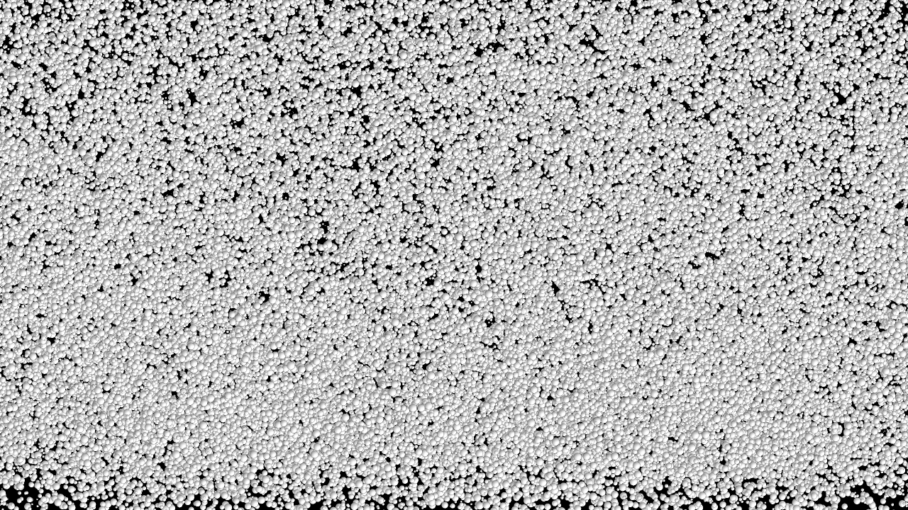
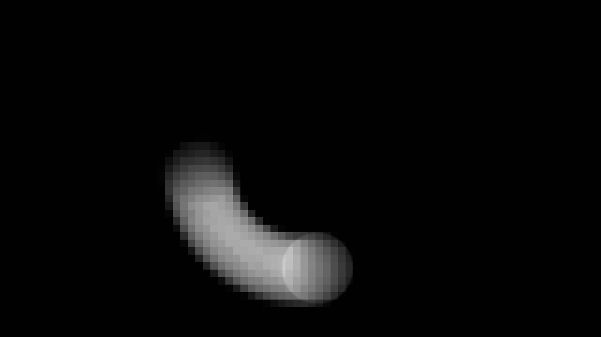

WebGL2,
without the boilerplate.
A lightweight toolkit for building fragment shaders, scroll-driven scenes, and simple WebGL scenes.
WebGL2 primitives and high-level recipes that compose.
wtc-gl provides the scaffolding - programs, meshes, cameras, render loops, texture utilities - so you spend time on the interesting parts. Use just the pieces you need, or reach for the opinionated recipes.
Full-screen fragment shaders
One class, one shader. FragmentShader creates a canvas,
wires up u_time and u_resolution, and
starts the render loop. Mouse, resize, and pixel-ratio are all
handled for you.
Inline scenes on any element
One fixed canvas, scissor-tested viewports, one shared render loop.
ScrollRenderer anchors independent WebGL programs to
DOM elements - no iframes, no per-canvas GPU contexts, no scheduling
jank.
GPU particle simulations
TransformFeedback handles ping-pong buffers
automatically. Write your velocity kernel in GLSL, read positions
back as attributes - millions of particles without touching the CPU
each frame.
See the primitives in action.
Each demo isolates one or two core concepts - textures, framebuffers, webcam input, GPU particles - so you can pull the code apart and adapt it.
Video texture
A video element sampled as a live Texture and fed
into a fragment shader each frame. The
onBeforeRender hook marks the texture dirty so the
GPU always sees the current video frame.

GPU particle simulation
Thousands of particles simulated entirely on the GPU using
TransformFeedback ping-pong buffers. Velocity is
computed in a vertex shader and fed back as position attributes
each frame - zero CPU involvement per particle.

Framebuffer post-processing
A scene rendered to an off-screen Framebuffer, then
composited through a second pass. Demonstrates the
render-to-texture pipeline for effects like bloom, blur, and
feedback loops.
Webcam cellular automata
A ping-pong Framebuffer runs Conway's Game of Life
where webcam brightness seeds new cells. Living cells inherit the
webcam's colour at the moment of their birth, creating a living
portrait that evolves frame by frame.
A shader on screen in five lines.
import { FragmentShader } from 'wtc-gl' import myFrag from './my-shader.frag' const fs = new FragmentShader({ fragment: myFrag, container: document.querySelector('.canvas-wrap') }) // u_time and u_resolution are wired up automatically. // Add your own uniforms any time: fs.setUniform('u_mouse', [x, y])
Install via npm, import from your bundler, and point it at a container. The canvas is created, sized, and animated for you.
For scroll-driven multi-scene layouts see ScrollRenderer →
The building blocks.
Renderer
WebGL2 context creation, pixel-ratio handling, and the main render loop.
Program
Shader compilation, uniform management, and attribute binding in one place.
Mesh
Geometry + program pairing with transform hierarchy via parent/child scene graph.
Geometry
Triangle, Plane, and Box primitives; or supply your own attribute buffers.
Texture
Create textures from typed arrays, images, or video — with format helpers.
Framebuffer
Off-screen render targets for post-processing and ping-pong feedback.
Camera
Perspective and orthographic cameras with look-at and dolly helpers.
Uniform
Typed uniform wrappers that track dirty state and batch-upload efficiently.